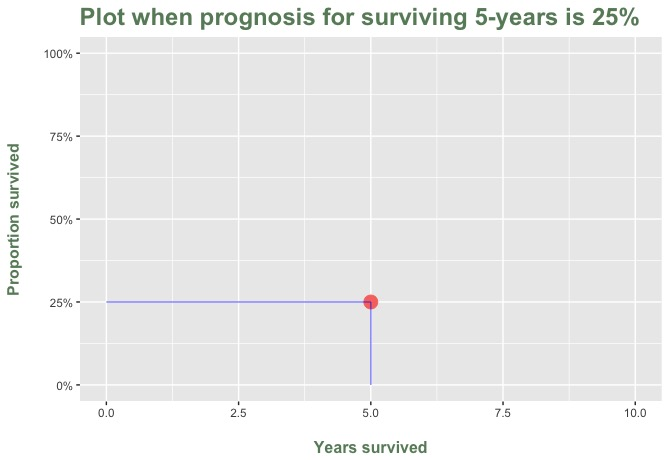
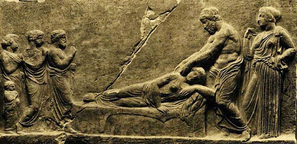

What is Prognosis?
Prediction is difficult.
Especially when it about the future.
Attributed to Niels Bohr and many others.
Dictionary definition
- The likely course of a medical condition.
Oxford English Dictionary.
Patient's definition
- News you don't want to get.
Kittie.
Survival time and Proportion surviving
Survival
time.
A prognosis can be expressed as the
expected time to an event.
For example, someone with a certain type and grade of cancer
can expect to live 5 years.
Proportion surviving.
Survival can also be expressed as the
chance of surviving to an event.
For example, 50% of people with a certain type and grade of
cancer will live at at least 5 years.
The difference is quite subtle, but the graphs on the Facts
tab should make the distinction easier to see.
The graph below shows how prognosis information is typically
given to patients (and taught to medical and nursing
students).
Prognosis is given as a bald statement such as:
25% of patients with the condition will
be alive at 5 years after their diagnosis.
There is
no suggestion that the uncertainties in the prediction are
very large.

The Facts tab shows how uncertain the prognosis can be. And,
that it changes over time.
Technical explanations
(This bit is only slightly technical, so don't go away before you
have read the explanation of why the usual way of giving a
prognosis is wrong. The real technical bits are in the statistics
section.)
Prognosis = Prediction
A prognosis is a prediction about an outcome such as survival, or
disease-free survival.
Group or Individual
A prognosis can be for a group. Or, it can be for an individual.
The distinction is important because predictions about individuals
are much more uncertain than those about groups.
Any prognosis is uncertain
Because any prediction is uncertain, a prognosis that is given to
you as a single number (like the examples above), is very likely to
be way out. Misleading. Wrong.
And that means that any prognosis should be up front about how
uncertain it is.
Before explaining how uncertainty in prognosis should be explained,
the fact that an uncertain prognosis is useful needs to be
explained.
Uncertainty in prognosis is useful
Uncertainty in prognosis is useful because it enables you to:
- Hope for the best (which is not usually provided)
- Plan for the worst
- Bet on the most likely (i.e. average)
It also enable you to see why you should not:
- Plan or bet on the worst outcome
- Plan or bet on the best outcome
- Hope for the average outcome
Because this is a good strategy to follow whether or not you have
a prognosis to worry about, it is a good reason not to ask about
your prognosis!
Uncertainty = Prediction Interval
A prognosis should, as a minimum, have two numbers that predict:
For an individual: the best and worst that can be
expected
For a group: the range including the most likely outcome
Prognosis changes
A prognosis is not a constant.
It changes as new information becomes available.
So, the prognosis you were given yesterday is a less accurate today,
because you know you have lived another day, and this fact changes
the predition.
Technically this is called "conditional survival".
Conditional survival is a short way of explaining what your
prognosis is, given the condition that you have survived 1, 2, ...
years (or whatever unit of time is appropriate).
The idea of conditional survival is important for two reasons:
- You aren't stuck with the prognosis you were originally given.
It changes. It can change for the worse. But, it can also change
for the better.
- As the graphs available on the Facts tab show, your prognosis
tends to get better over time, especially for those with the
worst initial prognosis
Hope and fear
A prognosis is usually frightening, because it means "things that
were never in your plan", as one patient said.
However, hope is always possible. And, because a prognosis is
uncertain and it changes, a better outcome than you fear is always
possible.
A snippet of ancient
history
|
To cure sometimes, to treat often, and to comfort
always

It appears
to me a most excellent thing for the physician to
cultivate Prognosis
Hippocrates, 400 BCE
|
Around 2400 years ago a Greek physician called Hippocrates wrote a
book on Prognosis.
At that time doctors had few effective treatments to offer their
patients, so providing them with information on their prognosis was
thought to be useful --- for the patient and the physician.
Hippocrates' main aim in writing his book was to provide doctors
with advice on what in today's management jargon is called
reputation management.
It appeared to Hippocrates to be an excellent thing for doctors to
err on the side of caution.
In other words, to prefer giving a bad prognosis: if the patient
survives they and their family will not mind nearly so much as if
they were given a good prognosis which turns out to be wrong.
Hippocrates' book sold well, and he has been famous ever since,
especially for the aspiration to "cure sometimes, to treat often,
and to comfort always".
Today's doctors hopefully will want to give their patients an
accurate prognosis, and won't be so concerned about the unseemly
side of reputation management. But the information and concepts
needed to do this have been lacking.
This app aims to fill this gap for patients, their families, and
healthcare professionals.